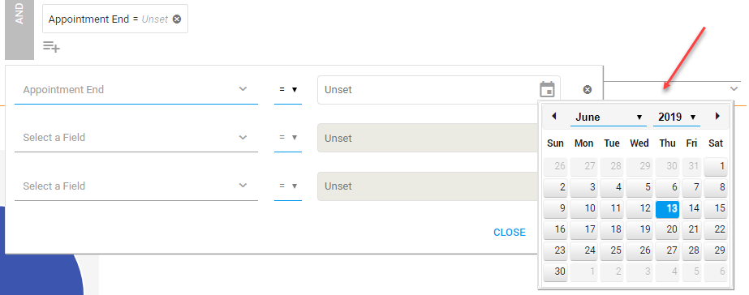
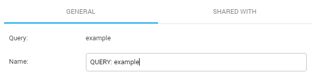
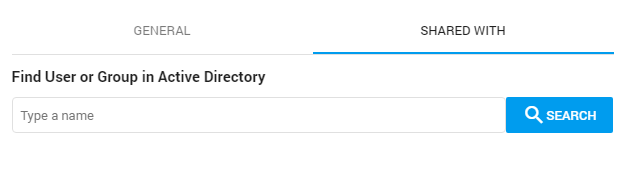

To locate LPP data, you may use queries to search for emails between lawyers and clients. A pre-programmed search will be able to identify all law firm email domain names.
When active, the Query Builder button is blue.
The Query Builder assists you when creating complex queries.
Tip: Select Parentheses and immediately start typing (the cursor is automatically placed inside the brackets).
Combine full-text and Fields/Tags/Review Status queries with AND or OR. Select the button to switch from AND to OR and back.
The AND/OR button is gray when not active (that is, not combined with another query).
Select to add a sub query (nested query), with a maximum of 7 levels for sub queries within sub queries. A sub query can be added to the highest/first level, or nested within sub queries.
Note: You can add more than 7 sub queries to the highest level.
Current limitation: You cannot add Tags/Review Status queries to sub queries.
Select to search Fields, Tags and/or Review Status.
Tip: Use the Home or End button to quickly scroll when filtering the fields.
Please note that, for performance reasons, only the first 10 values will be shown in an extracted entity field. So, for extracted email addresses, only the first 10 extracted email addresses will be shown. If you want to view all extracted email addresses, you need to download or export the result list.
Search quickly on years/months within Fields. 
To search for documents with a certain tag, select the tag:
To search for documents without a certain tag, select the tag: , then select NOT:
To search the Review Status, select Reviewed or Not Reviewed:
: Click
to reuse your queries (for example, for defining the initial Training Set in Assisted Review).
Note: All executed queries are stored in the History tab of Saved Searches. These queries can be reused, but not renamed/shared or deleted.
You can only share/rename or delete a saved search:
Rename in the General tab:
 Share in the Shared With tab.
Note: You can only share with users/groups that have a role with the 'Access Matter' permission. For more information, see Role Permissions Explained.

Searched keyword(s) are highlighted in Document View, so the reviewer can focus on that part(s) of the document. The different search highlighting colors are yellow for Keyword Search, custom selected color for Keyword Highlighting, and pink for Search within a Document (Ctrl + F)).
Use the arrows or Shortcut Keys to move forward and backward along the hits.
For more information on keyword searching, watch this video:

 to add a sub query (nested query), with a maximum of 7 levels for sub queries within sub queries. A sub query can be added to the highest/first level, or nested within sub queries.
to add a sub query (nested query), with a maximum of 7 levels for sub queries within sub queries. A sub query can be added to the highest/first level, or nested within sub queries.

 to search Fields, Tags and/or Review Status.
to search Fields, Tags and/or Review Status. 

 , then select NOT:
, then select NOT: 

 : Click
: Click
 to reuse your queries (for example, for defining the initial Training Set in Assisted Review).
to reuse your queries (for example, for defining the initial Training Set in Assisted Review).